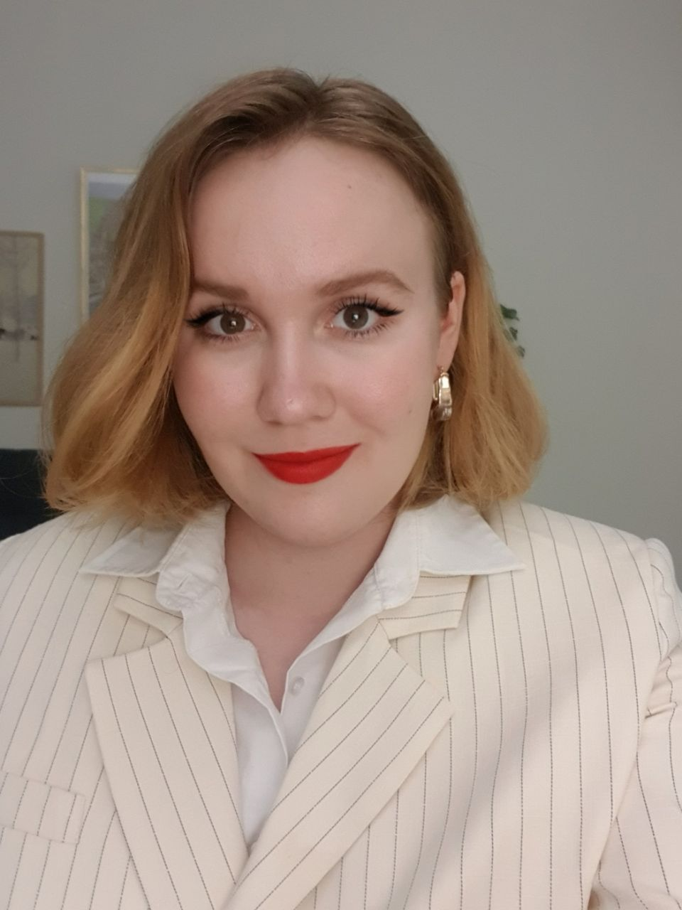

Om mig
Jag heter Aleksandra Shabardina och UX-Design är min största passion. Jag vill förbättra världen genom att lösa användarnas problem och göra deras interaktion med digitala produkter lättare, roligare och mer effektivt. Min fokus är tillgänglighet och innovativa design lösningar som kan användas i olika branscher.
Utbildning:
2022 - 2024: UX/UI Designer med frontendkompetens, Chas Academy
Färdigheter:
- Frontendutveckling: HTML, CSS och JavaScript.
- UX/UI-Design användarundersökning, prototypframställning, användartestning och implementering.
- Användning av design verktyg: Figma, Adobe Illustrator, Adobe Photoshop.
- Språk: svenska, engelska, ryska, spanska.
Specialisering:
Tillgänglighet och innovativa design lösningar